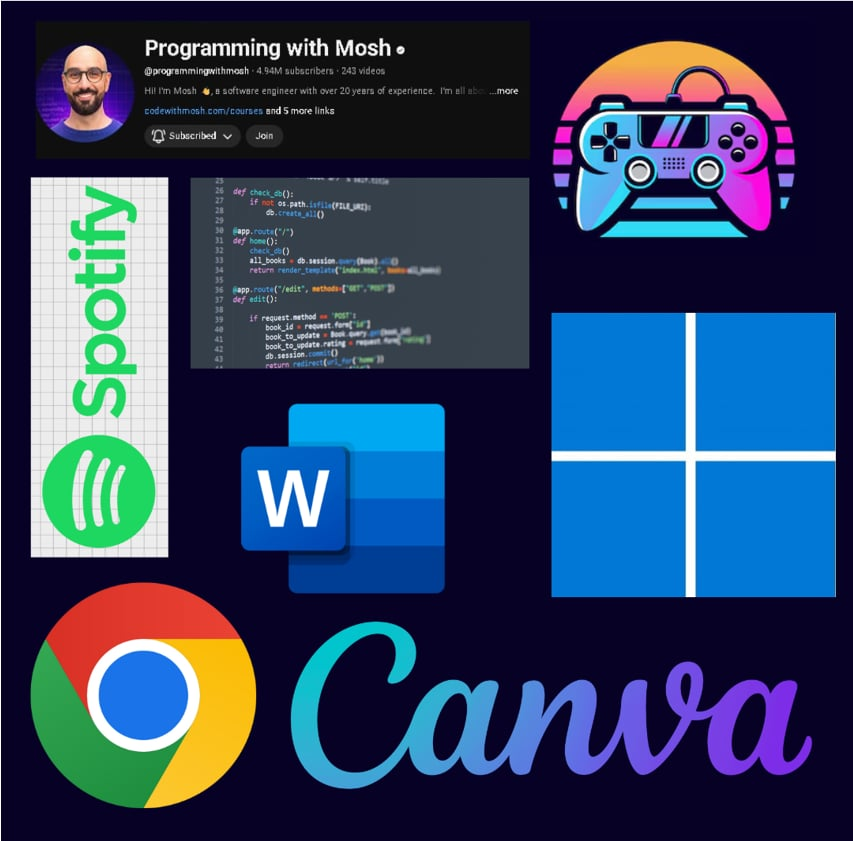
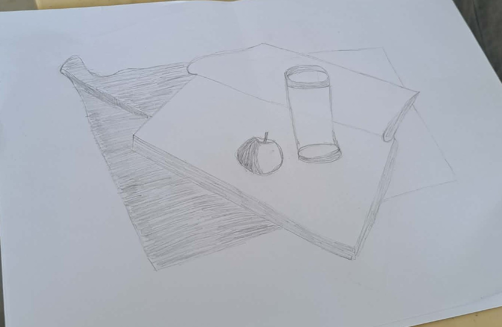
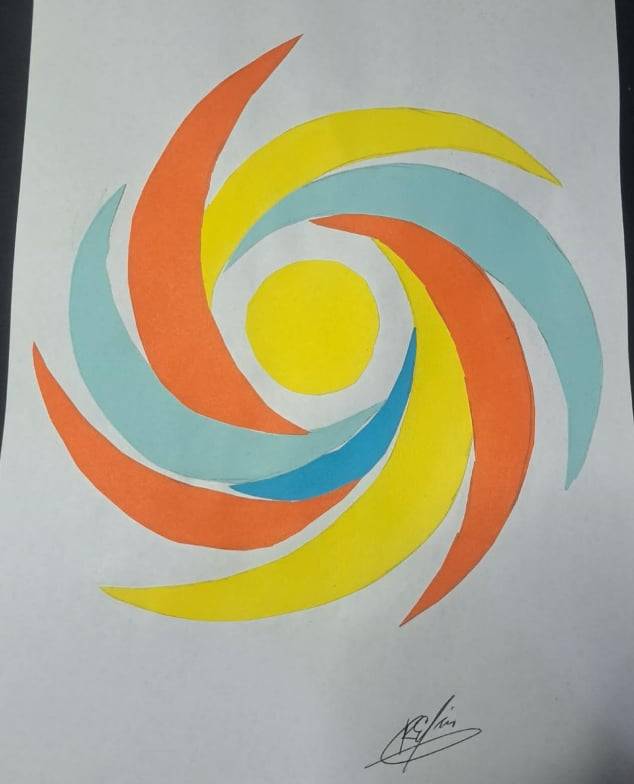
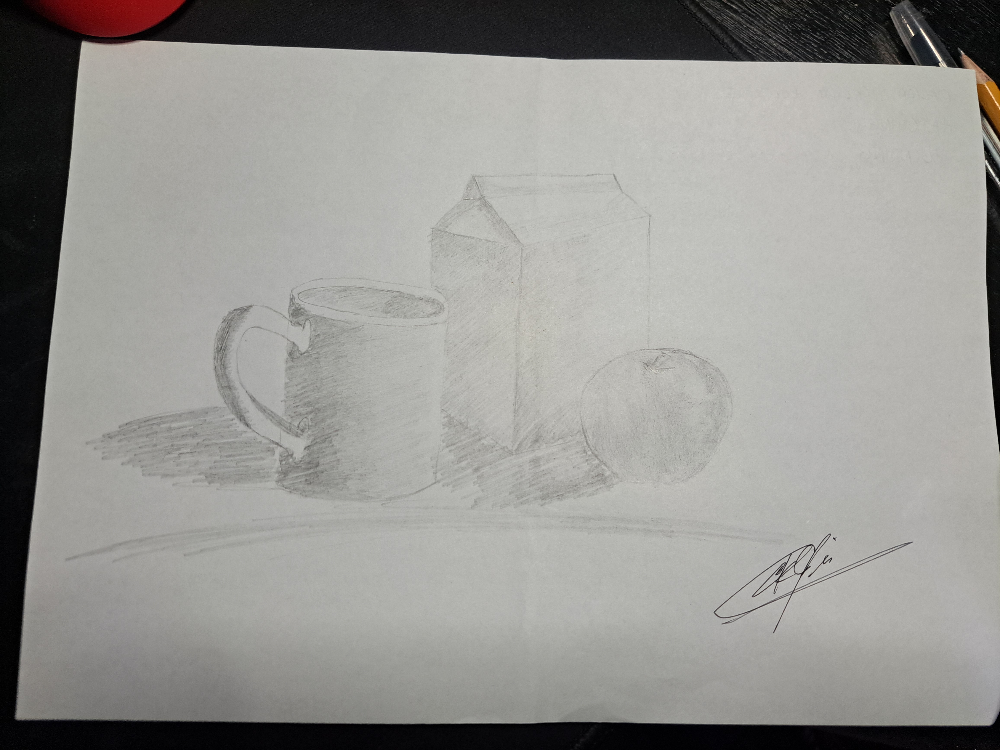
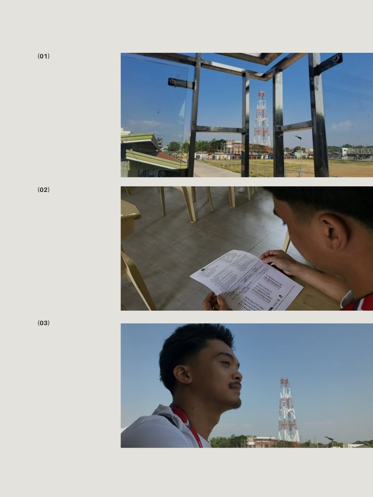
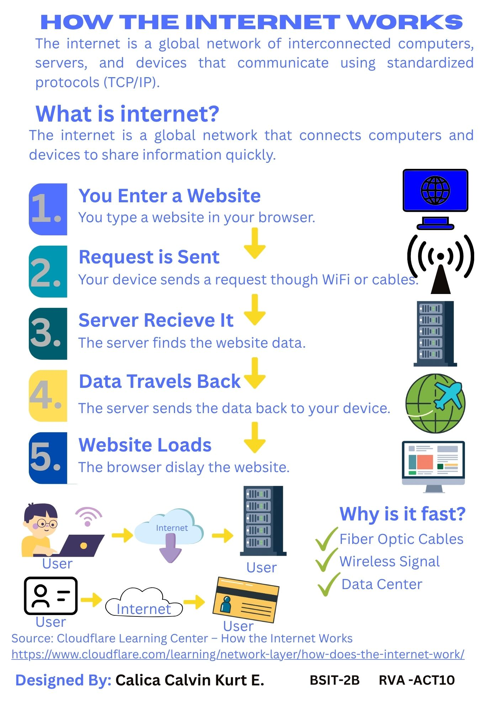
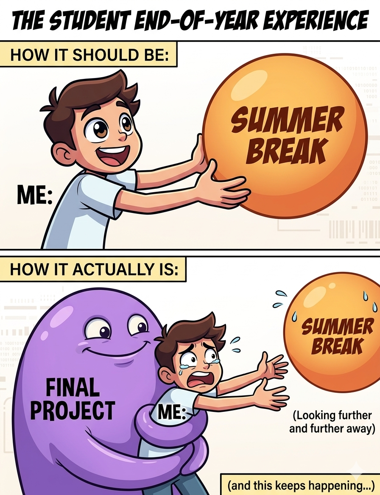

CALICA CALVIN
calvinkurt0712@gmail.com
This portfolio is a real look at my journey as an IT student exploring the world of visual arts. It’s not just about making things look "cool"—it’s about learning how to communicate ideas clearly, whether through a hand-drawn sketch or a digital poster. From the frustration of getting proportions right in Module 2 to the satisfaction of designing a clean infographic in Module 10, these works represent my effort to bridge the gap between creative expression and technical function.

Visual World
An exploration of our digital landscape using collage.

7 Elements of Art
Mastering the basics through traditional sketching.

Abstract Design
Practicing design principles through abstract shapes.

Transformation
A sequence showing an object evolving step-by-step.

Filipino-Inspired Pattern
Using photography and cultural symbols to create designs.

Drawing/Painting
A deeper look at light, shadow, and color theory.
Digital Poster
Mixing IT cybersecurity themes with an esports vibe.

Photo Narrative
Telling a story through a series of captured moments.

Infographic
Simplifying how the internet works through visual data.

Meme Series
Exploring humor as a tool for digital communication.